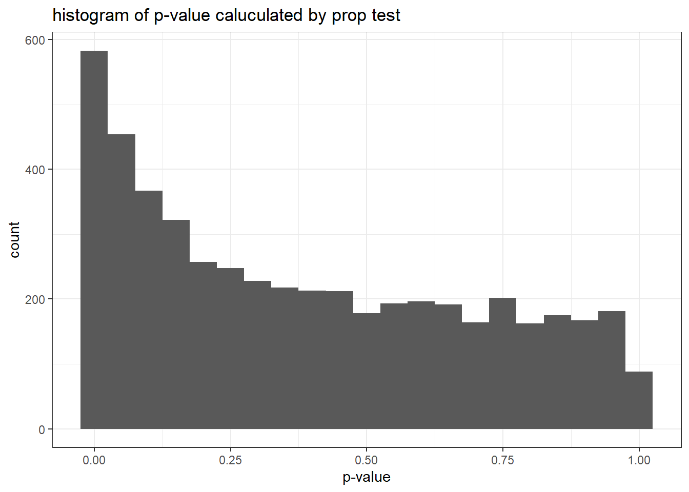

p値が小さい場合にバグの可能性が高いと考えるという記述に対し違和感を覚えたからです。
具体的には、片方の群に割り振られなかったらもう片方の群に割り振られると考えると、Treatment群とControl群の対象の選ばれ方が独立でなくなり、片方の数の増加がもう片方の数の減少を招くので有意差が出やすくなるのではと思い検証しようと思いました。
※ランダムサンプリングのロジックは母比率の差の検定とχ二乗検定で同じものを使うため、純粋に検定の仕方が影響する形になります
library(tidyverse)## Warning: package 'tidyverse' was built under R version 3.6.3## -- Attaching packages ------------------------------------------------------------------------------------------- tidyverse 1.3.0 --## √ ggplot2 3.3.2 √ purrr 0.3.4
## √ tibble 3.0.3 √ dplyr 1.0.2
## √ tidyr 1.1.2 √ stringr 1.4.0
## √ readr 1.3.1 √ forcats 0.5.0## Warning: package 'ggplot2' was built under R version 3.6.3## Warning: package 'tibble' was built under R version 3.6.3## Warning: package 'tidyr' was built under R version 3.6.3## Warning: package 'readr' was built under R version 3.6.3## Warning: package 'purrr' was built under R version 3.6.3## Warning: package 'dplyr' was built under R version 3.6.3## Warning: package 'forcats' was built under R version 3.6.3## -- Conflicts ---------------------------------------------------------------------------------------------- tidyverse_conflicts() --
## x dplyr::filter() masks stats::filter()
## x dplyr::lag() masks stats::lag()N <- 100000
trial_times = 5000
p1.vec <- rep(NA, times = trial_times)for (i in 1:trial_times) {
set.seed(i)
n1 <- sum(sample(c(0, 1), size = N, replace = TRUE, prob = c(0.5, 0.5)))
# print(n1)
t <- prop.test(c(n1, N - n1), c(N, N), correct = FALSE)
# print(t$p.value)
p1.vec[i] <- t$p.value
}gragh_data <- p1.vec %>%
as_tibble() %>%
ggplot(aes(x = value))+
geom_histogram(binwidth = 0.05)+
labs(x = "p-value", y = "count", title = "histogram of p-value caluculated by prop test")+
theme_bw()
plot(gragh_data)
p2.vec <- rep(NA, times = trial_times)for (i in 1:trial_times) {
set.seed(i)
n1 <- sum(sample(c(0, 1), size = N, replace = TRUE, prob = c(0.5, 0.5)))
# print(n1)
t <- chisq.test(c(n1, N - n1), p = c(0.5, 0.5))
# print(t$p.value)
p2.vec[i] <- t$p.value
}